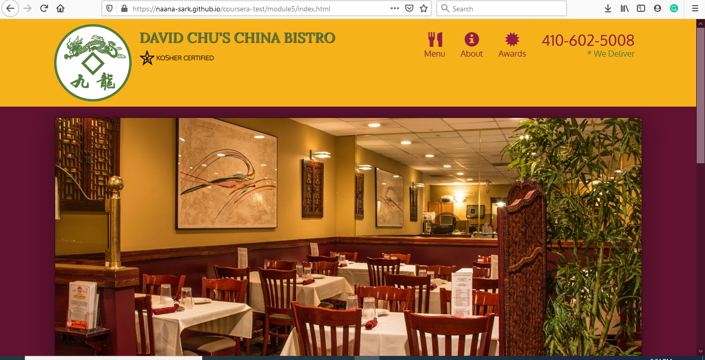

Over the summer, I took a course in web development and for my final project I designed a website for a restaurant. Project 
Second year second semester, I took a course, Database Management Systems. For my final project, I designed a database for Mystery Law Court. The database showed information of individuals and their criminal record if any, lawyers and judges, which law worker took which case and if the followed the right court proceedings.